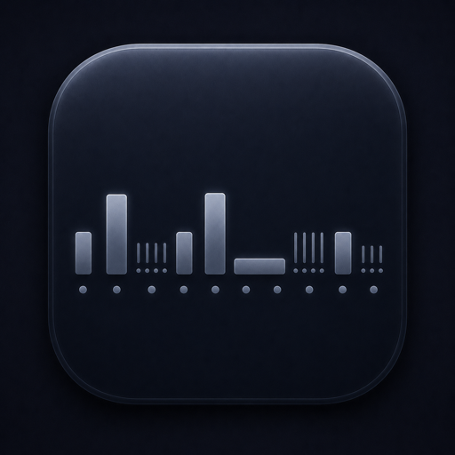

STEP ENGINE
Eight deep steps
Eight steps with sample-accurate MIDI generation locked to host transport. Per step: pitch, gate mode, pulse count (1–8), velocity, gate length, ratchets, slide, skip and two CC outputs.

A step sequencer in the lineage of the RYK M-185 and Roland System 100m, reimagined for the DAW. A pure MIDI effect — drop it on a MIDI track, route it into any instrument, and drive it with eight deep, expressive steps.
A paid SHLabs plugin in active development. Follow SHLabs for the release.
Eight steps with sample-accurate MIDI generation locked to host transport. Per step: pitch, gate mode, pulse count (1–8), velocity, gate length, ratchets, slide, skip and two CC outputs.
Single, repeat, legato, hold, divisions, probability gates and two Euclidean modes that spread onsets across a step's pulses — plus RYK-style ratcheting up to four re-triggers.
Automatic quantization to 34 scales with root selection, global and MIDI-input transpose, swing on every other pulse, and pitch-bend slide between steps.
Forward, reverse, ping-pong, random and brownian — each with a "fixed" variant that always traverses all eight steps. Sequence length 1–8.
Full transport sync, every control automatable, right-click MIDI-learn on any parameter, state saved with the project, and a configurable MIDI output channel.
Store and load full patterns to disk, and route the two per-step CC outputs to modulate anything in your rack — the sequence becomes a modulation source too.